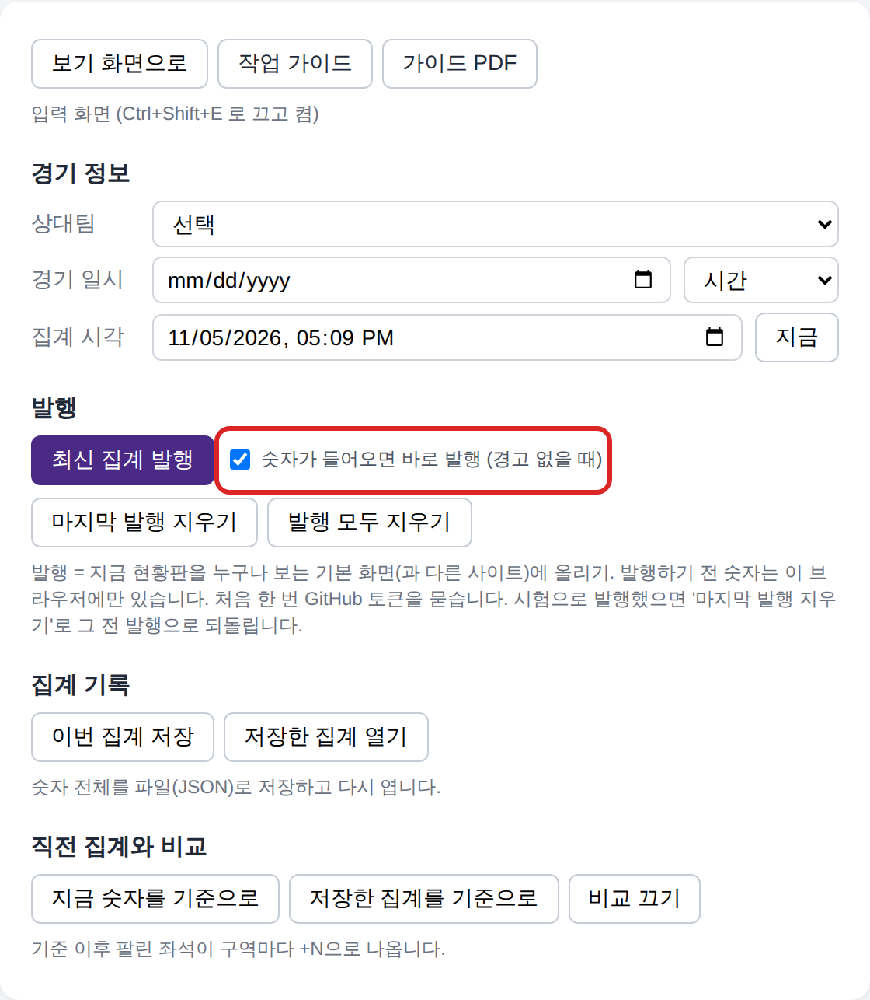
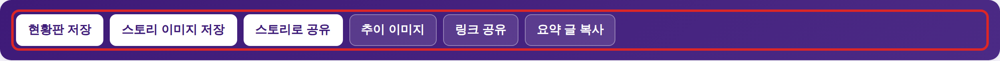

FC안양 예매현황 집계 가이드
2026-11-05 | 현황판 goormigrm.github.io/fc-anyang-seats
한눈에 보기
추천 방법: PC 크롬에서 티켓링크 예매 화면을 열고 등급을 차례로 누르기만 하면, 옆 탭의 현황판에 숫자가 저절로 들어가고 30초 뒤 저절로 발행됩니다. 캡처도, 숫자 입력도 하지 않습니다.
차례로 누름
저절로 들어감
발행
다른 사이트
처음 한 번 10분 정도 준비하면, 그다음부터는 집계 한 번에 1~2분이면 됩니다.
말 정리
| 입력 화면 | 숫자를 넣고 고치는 화면. 내 브라우저에만 저장됩니다. |
|---|---|
| 발행 | 입력 화면의 지금 현황판을 누구나 보는 기본 화면(과 다른 사이트)에 올리는 것. 발행하기 전까지 숫자는 내 브라우저에만 있습니다. |
| 바로 발행 | '숫자가 들어오면 바로 발행'을 체크해 두면, 마지막 숫자가 들어오고 30초 뒤 경고가 없으면 저절로 발행합니다. |
| Tampermonkey | 크롬에 작은 스크립트를 붙여 주는 확장 프로그램. 여기에 '보내기 스크립트'를 하나 설치해 씁니다. |
| 보내기 스크립트 | 티켓링크 좌석 선택 화면에 보이는 글자(등급, 구역, 잔여석)를 읽어 같은 크롬에 열린 현황판 입력 화면으로 넘겨줍니다. 티켓링크와 현황판 주소에서만 돌고, 다른 사이트에서는 아무것도 안 합니다. 누르기, 새로고침, 외부 전송은 하지 않습니다. |
처음 한 번만 준비 약 10분
1. 크롬에 Tampermonkey 설치
- 크롬 웹 스토어에서 Tampermonkey 를 찾아 '크롬에 추가'를 누릅니다.
- 크롬 주소창에
chrome://extensions를 열고, Tampermonkey 의 '세부정보'에서 사용자 스크립트 허용을 켭니다. (크롬 버전에 따라 이 항목이 없으면 오른쪽 위 개발자 모드를 켭니다.)
2. 보내기 스크립트 설치
- 크롬에서
https://goormigrm.github.io/fc-anyang-seats/fc-anyang-send.user.js를 엽니다. - Tampermonkey 설치 화면이 뜨면 설치를 누릅니다.
Tampermonkey 아이콘을 눌렀을 때 '활성화됨'과 'FC안양 예매현황 보내기'가 켜져 있으면 됩니다. 평소에 계속 켜 둬도 됩니다. 티켓링크 좌석 선택 화면이 아니면 아무것도 하지 않아서 다른 사이트나 크롬 속도에 영향이 없습니다. 스크립트가 고쳐지면 Tampermonkey 가 하루 안에 저절로 새 판으로 바꿉니다.
이 스크립트는 티켓링크 화면에 보이는 글자를 읽어 현황판 탭에 넘겨주기만 합니다. 대신 누르거나, 새로고침하거나, 티켓링크에 요청을 보내지 않습니다.
3. 현황판 입력 화면 열고 '바로 발행' 켜기
- 크롬에서
https://goormigrm.github.io/fc-anyang-seats/#edit를 열고 북마크해 둡니다. (현황판에서 Ctrl+Shift+E 를 눌러도 입력 화면이 됩니다.) - '발행' 칸의 숫자가 들어오면 바로 발행을 체크합니다.

4. GitHub 토큰 만들기 (발행용)
- github.com 로그인 -> 오른쪽 위 프로필 사진 -> Settings -> 맨 아래 Developer settings -> Personal access tokens -> Fine-grained tokens -> Generate new token.
- 이름은 아무거나, 기간은 1년 정도. Repository access 는 Only select repositories 에서
fc-anyang-seats하나만 고릅니다. - Permissions 의 Contents 를 Read and write 로 바꾸고 만든 뒤, 나온 토큰을 복사해 둡니다.
- 처음 집계할 때 '최신 집계 발행'을 한 번 누르면 토큰을 묻습니다. 붙여넣으면 그 브라우저가 기억하고(만료일도 적어 두면 30일 전부터 알림), 그 뒤로는 저절로 발행됩니다.
- 이미 넣은 토큰을 바꾸거나, 만료일을 적거나, 비밀번호로 잠그려면 발행 칸의 토큰 설정을 누릅니다.
예매 여는 날 점검표 첫 실전
- 입력 화면을 열고 '발행' 칸에서 발행 모두 지우기로 지난 시험 발행을 지웁니다(처음 한 번).
- '숫자가 들어오면 바로 발행'이 체크돼 있는지 봅니다.
- 현황판 탭 오른쪽 위 수집 램프가 노랑(스크립트 켜짐)인지 봅니다. 회색이면 그 브라우저에 스크립트가 없거나 꺼져 있습니다.
- 티켓링크 예매 화면을 열면 램프가 초록 '예매 화면 감지됨'으로 바뀌는지 보고, 등급 4개(가변석, 서포터즈석, 해링턴플레이스존, 퍼스트 스탠딩석)를 차례로 누릅니다.
- 현황판 탭에서 확인합니다.
- 표에 노란 줄이 생겼는지
- 최대 좌석을 새로 넣음 줄에 일반지정석, 일반자유석, 중립석, 남측자유석 같은 모르던 구역이 나오는지 (예매가 열리자마자면 정확)
- 현황판에 없는 등급 줄이 나오면 등급 이름이 바뀐 것이니 그 줄을 알려 주세요 - 30초 뒤 '발행했습니다'가 나오면, 다른 창(휴대폰 등)에서 기본 주소를 열어 새 숫자가 보이는지 확인합니다.
- 숫자가 안 들어오면 티켓링크 화면에서 Ctrl+A, Ctrl+C -> 현황판 탭에서 Ctrl+V. 그래도 안 되면 복사한 글자를 보내 주세요.
매번 집계할 때 1~2분
- 크롬에서 현황판 입력 화면(북마크)을 열어 둡니다. 이 탭은 닫지 않습니다.
- 같은 크롬의 다른 탭에서 티켓링크에 로그인하고, FC안양 경기 -> 예매하기 -> 등급/좌석 선택 화면까지 갑니다. 좌석을 고르거나 결제할 필요는 없습니다. 현황판 탭 오른쪽 위 램프가 초록 '예매 화면 감지됨'이 되면 준비 끝입니다.
- 오른쪽 '등급 선택' 목록에서 구역이 여러 개인 등급 4개를 차례로 한 번씩 누릅니다. 하나 누를 때마다 1~2초 기다립니다.
가변석, 서포터즈석, 해링턴플레이스존, 퍼스트 스탠딩석
나머지 등급(일반지정석, 원정석, 피크닉존 등)은 목록에 잔여석이 같이 보여서 따로 누르지 않아도 됩니다. - 현황판 탭에서 숫자가 들어왔는지 봅니다. 램프가 깜빡이며 '숫자 받음' 시각이 바뀌고, 들어온 구역은 표에 노랗게 칠해지고, 마지막 입력 30초 뒤 '발행했습니다'가 나옵니다.
- 필요하면 공유합니다: 스토리 이미지 저장, 추이 이미지(어제보다 얼마나 늘었는지), 요약 글 복사(인스타, 카톡용 글), 링크 공유.
- 경기가 끝나면 전광판 공식 관중을 입력 화면 '공식 관중' 칸에 넣고 최신 집계 발행을 한 번 누릅니다(경기별 기록에 남음).

저절로 되는 것
| 집계 시각 | 숫자를 받은 시각으로 들어갑니다. '지금' 버튼을 누를 필요가 없습니다. |
|---|---|
| 직전 대비 +N | 같은 경기를 다시 집계하면 지난 숫자와 비교해 구역마다 팔린 좌석이 +N 으로 나옵니다. |
| 새 경기 | 상대팀이나 날짜가 바뀌면 지난 숫자를 지우고 원정석 최대를 1235로 되돌립니다. '새 경기' 버튼을 누를 필요가 없습니다. |
| 빠진 구역 하나 | 등급 합계로 계산해 채웁니다. |
| 발행 | 보기 화면(누구나 보는 기본 주소)과 다른 사이트가 가져가는 데이터가 바뀝니다. 보는 쪽에는 5분 안에 반영됩니다. |
| 추이 그래프 | 발행할 때마다 페이지 맨 아래 '예매된 좌석 추이'에 점이 하나씩 쌓이고, 지난 집계보다 얼마나 늘었는지와 경기 시작 때 예상이 나옵니다. |
원정 경기 (김천)
- 크롬에서 김천 원정 입력 화면
https://goormigrm.github.io/fc-anyang-seats/?s=gimcheon#edit를 엽니다(북마크). - 다른 탭에서 티켓링크 김천상무 vs FC안양 경기의 등급/좌석 선택 화면까지 가서 등급을 차례로 누릅니다. 홈 경기와 같습니다.
- 숫자가 들어오면 발행합니다. 김천 원정 보기 화면은
…/fc-anyang-seats/?s=gimcheon이고, 홈 화면과 따로 저장됩니다.
현황판은 예매된 좌석과 예매율을 보여 줍니다(구역 칸도 예매율, 많이 팔릴수록 진하게). 원정은 구역 총석을 알아야 예매율이 나옵니다: 김천은 넣어 두었고, 새 구장은 구역마다 좌석 그림을 한 번 잘라 넣습니다(보라 = 원정 응원 쪽 S, 파랑 = 홈 팀 쪽).
최대 좌석
아직 최대 좌석을 모르는 구역(일반지정석, 일반자유석, 중립석, 남측자유석, T3, FS3~5, FS7)은 처음 들어온 잔여를 최대로 저절로 넣습니다. 그래서 예매가 열리자마자 한 번 집계하면 정확한 최대가 들어갑니다(늦게 하면 이미 팔린 만큼 작게 들어감). 들어간 값은 표에 점선 노란 칸(추정)으로 보이고, 더 큰 잔여가 오면 저절로 늘어납니다. 그 브라우저에 계속 남고, '새 경기'가 되어도 지워지지 않습니다(원정석만 1235로 돌아감).
첫 경기가 끝난 뒤 Claude 에게 "발행된 최대 좌석을 기본값으로 넣어 줘"라고 하면, 발행 데이터에서 읽어 코드 기본값으로 옮깁니다. 그러면 휴대폰이나 다른 PC에서도 같은 값이 쓰입니다. 지난 경기 발행은 경기가 바뀔 때 따로 보관되니 '발행 모두 지우기'를 해도 사라지지 않습니다.
이럴 때는
경고(⚠)가 나왔을 때
경고가 있으면 저절로 발행하지 않습니다. 표에서 숫자를 고친 뒤 최신 집계 발행을 직접 누릅니다. 원정석을 넓게 연 날(최대 1713석)에는 '잔여가 최대보다 많음' 경고가 나오니, 표에서 원정석 '최대'를 1713으로 바꿉니다.
시험으로 발행했을 때
입력 화면 '발행' 칸의 마지막 발행 지우기를 누르면 방금 발행이 지워지고 바로 전 발행으로 돌아갑니다(추이 그래프의 마지막 점도 지워짐). 한 번만 되돌릴 수 있습니다. 보기 화면을 깨끗이 비우려면 발행 모두 지우기를 누릅니다(이번 경기 발행만 지우고 지난 경기 보관본은 남김).
'정보 없는 구역이 N개라 자동 발행을 기다립니다'가 나올 때
아직 안 누른 등급이 있다는 뜻입니다. 나머지 등급을 누르면 저절로 발행됩니다. 그날 판매하지 않는 등급이라 끝까지 비어 있으면 최신 집계 발행을 직접 누릅니다.
'⚠ 다른 경기라 지난 숫자를 지웠습니다'가 나올 때
새 경기 첫 집계면 정상입니다(이 집계만 자동 발행을 건너뛰고, 다음 등급부터 발행). 잘못 지워졌으면 구역별 잔여석 칸의 지난 경기 숫자 되살리기를 누릅니다.
숫자가 안 들어올 때: 먼저 램프를 봅니다
| 꺼짐(회색) | 스크립트 신호 없음. 이 브라우저에 Tampermonkey 와 'FC안양 예매현황 보내기'(12판)가 켜져 있는지 봅니다. |
|---|---|
| 노랑 | 스크립트는 켜짐. 이 브라우저(램프에 이름 표시)에서 연 티켓링크가 없음. 티켓링크를 다른 브라우저에서 열었으면 현황판도 그 브라우저에서 엽니다(현황판 크롬 + 티켓링크 웨일은 안 넘어옴). |
| 파랑 | 티켓링크는 열렸지만 등급/좌석 선택 화면이 아님. 램프에 '화면에 없는 글자'가 나옵니다. 예매하기 -> 등급/좌석 선택까지 갑니다. |
| 초록 | 예매 화면 감지됨. 등급을 누르면 숫자가 들어옵니다. 1분 안에 받으면 깜빡입니다. |
| 빨강 | 다른 구장 예매 화면. 김천 원정 현황판은 김천종합운동장 화면만 받습니다. |
티켓링크 화면 오른쪽 아래 표시도 봅니다: 초록 '현황판이 받음'이면 정상, 빨강 '이 브라우저에 현황판 입력 화면이 없어 못 넘김'이면 같은 브라우저에서 현황판 입력 화면을 엽니다(열면 5~10초 안에 다시 보냄), 주황 '안 받음'이면 이유를 봅니다.
다른 방법
- PC 화면 복사: 티켓링크 화면에서 Ctrl+A, Ctrl+C -> 현황판 탭 빈 곳을 누르고 Ctrl+V. 등급마다 반복합니다. 결과는 같습니다.
- 휴대폰 캡처: 티켓링크 앱에서 등급마다 눌러 구역 목록이 보이게 캡처합니다. 휴대폰 브라우저로 현황판 입력 화면(
.../fc-anyang-seats/#edit)을 열고 '파일 선택'에서 캡처를 한꺼번에 고릅니다. 글자 인식이라 노란 줄의 숫자를 한 번 확인합니다. - PC 캡처: 티켓링크 PC 화면에서 오른쪽 등급 목록이 보이게 캡처(Win+Shift+S, 목록만 잘라도 됨)해 현황판 탭에 Ctrl+V. 구역 좌석 그림만 잘라 넣으면 칸을 세어 남은 좌석과 전체 좌석을 넣습니다. 여러 번 읽어 같은 값이 두 번 나온 줄만 넣으므로, 빈 구역은 표에 직접 넣습니다.
- 그래도 안 되면 티켓링크 화면에서 복사한 글자를 개발자에게 보내 주세요. 티켓링크 PC 화면 형식에 맞춰 고칩니다.
하지 말 것
티켓링크 화면 자동 새로고침 확장, 매크로, 자동 클릭 프로그램은 쓰지 않습니다. 티켓링크 약관(제32조)에 따라 계정이 제한될 수 있고, 그러면 실제 예매도 못 합니다.
참고
| 보기 화면 | https://goormigrm.github.io/fc-anyang-seats/ 누구나 마지막 발행 현황을 봅니다. 홈, 원정 중 가장 최근에 발행한 구장이 먼저 나옵니다(늘 홈은 ?s=anyang, 김천은 ?s=gimcheon). |
|---|---|
| 구장 버튼 | 보기 화면 공유 버튼 아래 안양 홈, 김천, 전북, 포항, 서울, 울산, 인천, 경기별 기록 버튼. 누르면 그 구장의 마지막 집계가 나옵니다(버튼에 마지막 집계 날짜). 원정 경기 집계는 그 구장 화면 끝에 #edit 을 붙여 입력합니다. |
| 놀티켓 구장 | 수원삼성, 수원FC, 부천, 강원 원정은 놀티켓에서 예매합니다. 보내기 스크립트 12판이 놀티켓 화면(관람 구역 목록)도 읽습니다. 다만 놀티켓은 구역별 잔여를 보여 주지 않아, 구역마다 좌석 그림을 캡처해 넣어야 남은 좌석과 전체 좌석이 나옵니다. 램프에 '놀티켓 열림 · 화면에 없는 글자'가 나오면 그 화면을 캡처해 보내 주세요. 그동안은 놀티켓 화면을 Ctrl+A, Ctrl+C 로 복사해 현황판에 Ctrl+V 하거나 캡처를 넣으면 됩니다. |
| 한 화면에 안 들어오는 구역 | 크롬에서 F12 → Ctrl+Shift+M(기기 툴바) → 크기를 '반응형'으로 두고 1400 × 2600 처럼 세로를 크게 → 오른쪽 ⋮ 메뉴의 스크린샷 캡처로 저장하면 화면보다 큰 그림이 한 장으로 저장됩니다. 그래도 안 되면 겹치는 줄 없이 두 장으로 나눠 찍어 한 번에 넣고, 묻는 창에서 [확인]을 누르면 더합니다. |
| 새 원정 구장 첫 집계 | 전북, 포항, 서울, 울산, 인천, 수원삼성, 수원FC, 부천, 강원은 티켓링크 구역 이름과 구역 총석을 아직 모릅니다. 첫 집계 때 상태 글이나 램프에 '현황판에 없는 구역 이름'이 나오면 그 글자를 개발자에게 보내 주세요. 총석은 구역 좌석 그림을 한 번씩 잘라 넣으면 모입니다. |
| 원정 미판매 | 원정 입력 화면 표의 '미판매' 버튼: 이번 경기에 팔지 않는 구역을 빗금으로 표시합니다. 티켓링크는 이런 구역도 0석으로 보여 주지만 자동 입력이 와도 미판매 그대로 둡니다. 판매를 시작하면 버튼을 다시 눌러 끕니다. |
| 입력 화면 | 주소 끝 #edit, 또는 Ctrl+Shift+E. 맨 위 '보기 화면으로'로 돌아갑니다. |
| 다른 사이트에 넣기 | 보기 화면 공유 칸의 퍼가기 코드를 누르면 iframe 코드가 복사됩니다. 다른 사이트 HTML 에 붙여 넣으면 현황판이 보이고, 홈, 원정 중 가장 최근 경기를 따라갑니다(어느 화면에서 눌러도 같은 코드라 경기마다 바꿀 필요 없음). 링크로 걸 때는 기본 주소를 씁니다(휴대폰 화면에 맞음). |
| 다른 사이트용 데이터 | https://raw.githubusercontent.com/goormigrm/fc-anyang-seats/data/latest.json (설명은 저장소 README) |
| PC 캡처 묶음 | 이 PC에서는 캡처를 현황판 만들기.bat 위로 끌어다 놓아도 결과 파일을 만들고 발행합니다. |